Inicio
.jpg)
Raíces Orientales
"Raíces Orientales" narra la llegada de la comunidad china a Piura y cómo, con el paso del tiempo, estas familias crearon espacios para compartir y mantener viva su cultura. A través de sus actividades, transmiten tradiciones, costumbres y valores, preservando una identidad que enriquece al norte del Perú.
Este proyecto es un homenaje a esa resiliencia y un puente para que las nuevas generaciones conozcan y valoren la profunda huella de la cultura china en nuestra tierra.
Trailer
En este adelanto, conocerás a Dilcia Isabel Li Say Tan Sánchez, una mujer extraordinaria que lleva en su sonrisa la calidez piurana y en su corazón el orgullo de sus raíces chinas. Escucharás por primera vez su voz, verás el brillo en sus ojos cuando habla de su padre cantonés y sentirás la emoción que la embarga al recordar las tradiciones familiares que aún conserva
Documental
Este documental da voz a nuestra protagonista Dilcia Isabel Li Say Tan Sánchez de la comunidad chino-peruana. A través de sus testimonios, exploramos la historia, los desafíos y el orgullo de ser guardianes de un legado ancestral en tierra peruana, mostrando cómo sus tradiciones enriquecen la identidad de Piura.
Juego: "Navegando hacia un nuevo hogar"
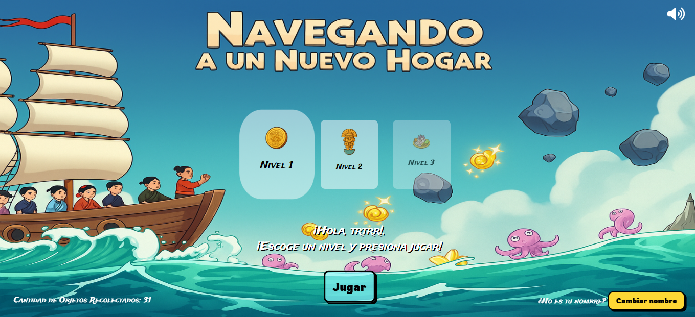
El juego recrea el viaje de migrantes chinos al Perú siglo XIX. Tiene tres niveles: remolino, tormenta y rocas. El jugador guía una embarcación, supera desafíos y descubre un fragmento de su legado hasta arribar a la costa norte peruana. ¡Acepta el reto!
Cuento
Galería
Explora una cuidada selección de fotografías históricas que documentan el legado Chino. ¡Echale un vistazo!
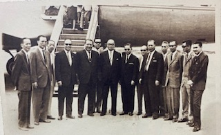
Imagen 1
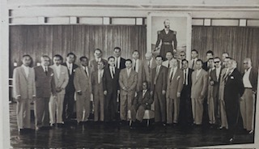
Imagen 2
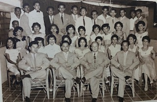
Imagen 3
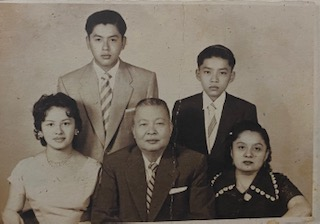
Imagen 4
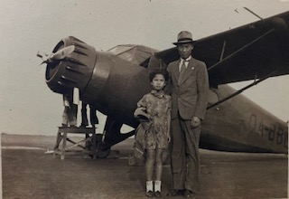
Imagen 5
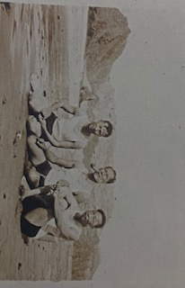
Imagen 6
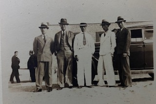
Imagen 7
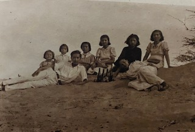
Imagen 8
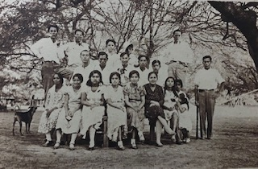
Imagen 9
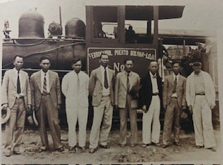
Imagen 10
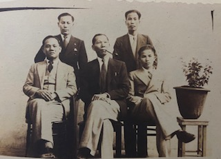
Imagen 11
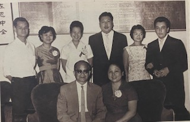
Imagen 12
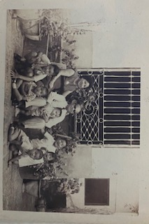
Imagen 13
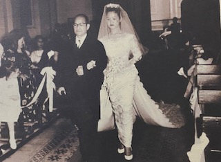
Imagen 14
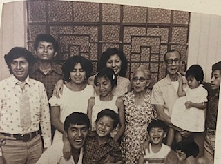
Imagen 15
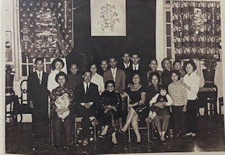
Imagen 16
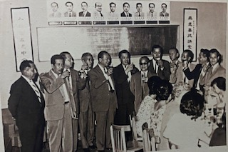
Imagen 17
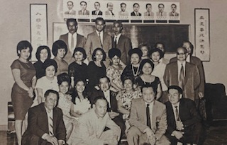
Imagen 18
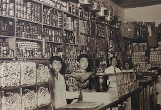
Imagen 19
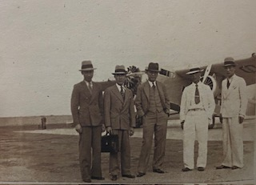
Imagen 20
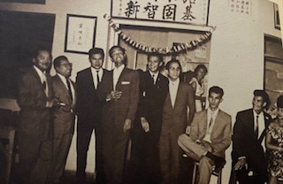
Imagen 21
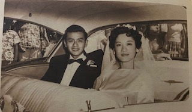